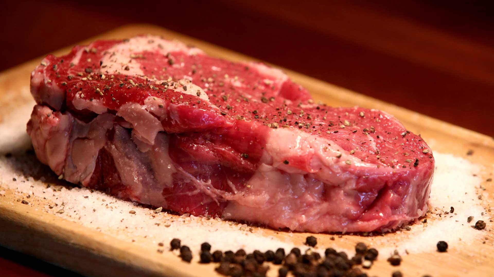

Go back
Ribeye Steak

Image by
Paras Kapoor
Ribeye steak is a cut of beef that is known for its rich, juicy, and
flavorful meat. It is usually grilled or pan-seared. Served as a main
course with various sides such as vegetables, potatoes, or salad.
Ingredients
- 2 Ribeye Steaks (about 1 lb each)
- 2 tablespoons olive oil
- 2 cloves garlic, minced
- 2 tablespoons fresh rosemary, chopped
- Salt and pepper to taste
Instructions
-
Take the steaks out of the refrigerator and let them sit at room
temperature for 30 minutes.
- Preheat the oven to 400°F (200°C).
- Heat a cast-iron skillet over high heat.
-
Rub the steaks with olive oil, garlic, rosemary, salt, and pepper.
-
Place the steaks in the skillet and sear for 2-3 minutes on each side.
-
Transfer the skillet to the preheated oven and cook for 6-8 minutes for
medium-rare doneness, or longer for medium or well-done steaks.
-
Remove the skillet from the oven and let the steaks rest for 5 minutes
before slicing and serving.
Go back